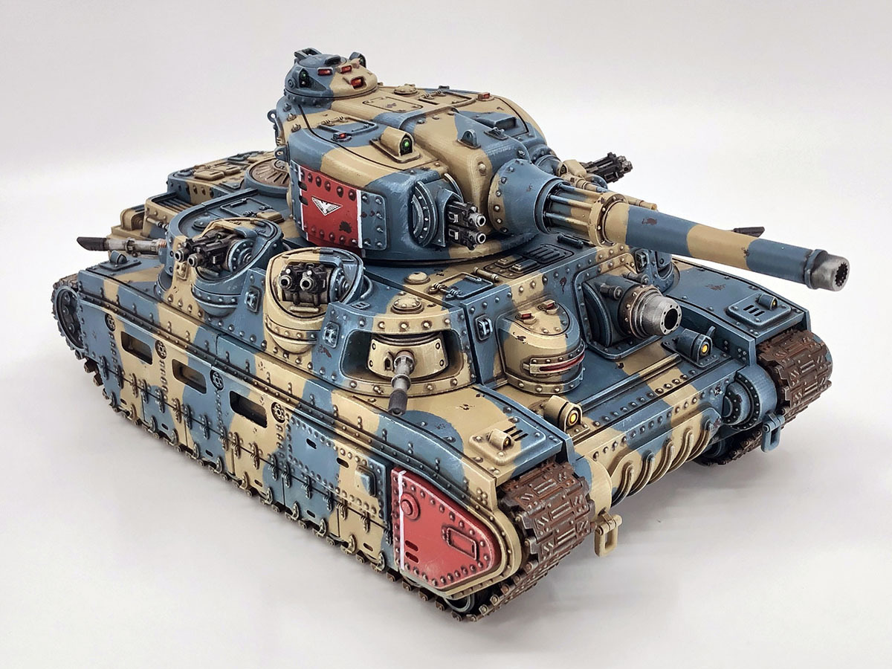

Broadsword Superheavy Tank
The Broadsword and its sister vehicles are one step below the mighty Krevarian Landships - superheavy tanks with thick armor and bristling with weaponry.
The SHA.17 is primarily intended as a spearhead tank, capable of defeating any armored vehicle in its own weight class or lower. Most versions also carry a substantial secondary battery of light anti-armor, anti-infantry, and anti-aircraft weaponry, forming a strongpoint around which lighter armor can operate more effectively. Some versions of the Broadsword minimize the secondary battery in favor of additional supplies and communications gear to increase operational range. These variants are often used as command vehicles rather than in an assault role.